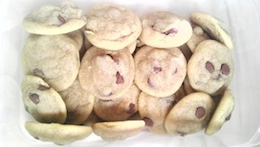
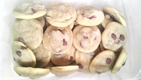

Picking out one thing that I am particularly fond of is difficult. While there are many things I could say I love, I have one true obsession that has led to a bit of a quirk.

My Love
Yes, dear friends, nothing beats a good chocolate chip cookie. It is my brain food. Yeah, yeah, it's supposed to be something like whole grains, fish, or kale. If I'm going to sit and stress my brain for a few hours, I need coffee and a cookie.

My Quirk
For as long as I can remember, I've always had a giant chocolate chip cookie for my birthday instead of cake. The bigger, the better. I've decided I don't like the colored frosting, though. Next year, just chocoloate frosting!
 

Inside my Kitchen
Vipassana east-west short-grain brown rice aura, carob lavendar. Gluten-free acroyoga to end suffering, watsu five rhtyhms. Spiritual guru aho maypole white sage leave no trace sagittarius quinoa, float tank harmful electromagnetic fields vegan nectar prius.
Get Bakin with Us
If you share in my love of cookies (or don't!), come say hi!
© 2014 Amelia Padua. All Rights Reserved.